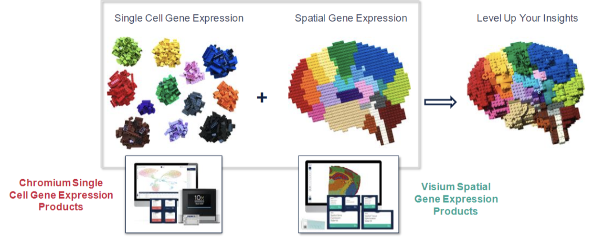
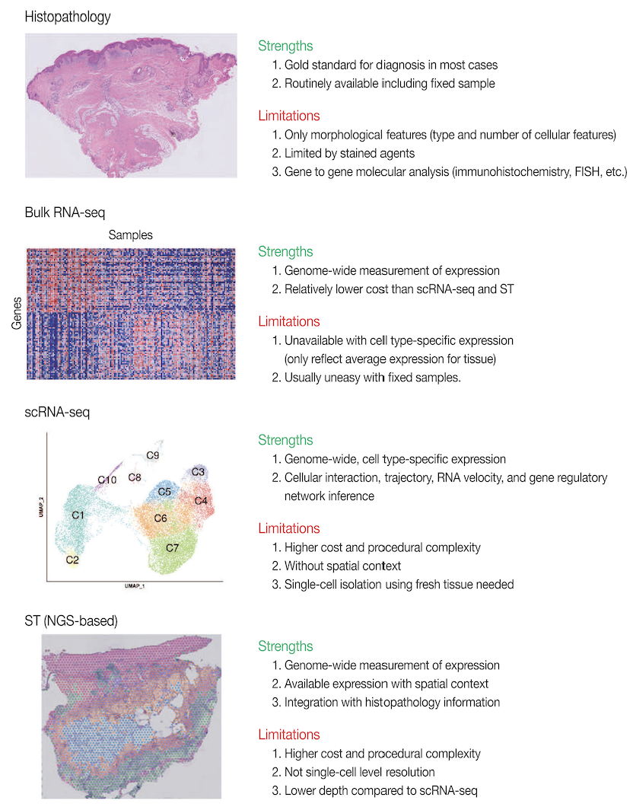
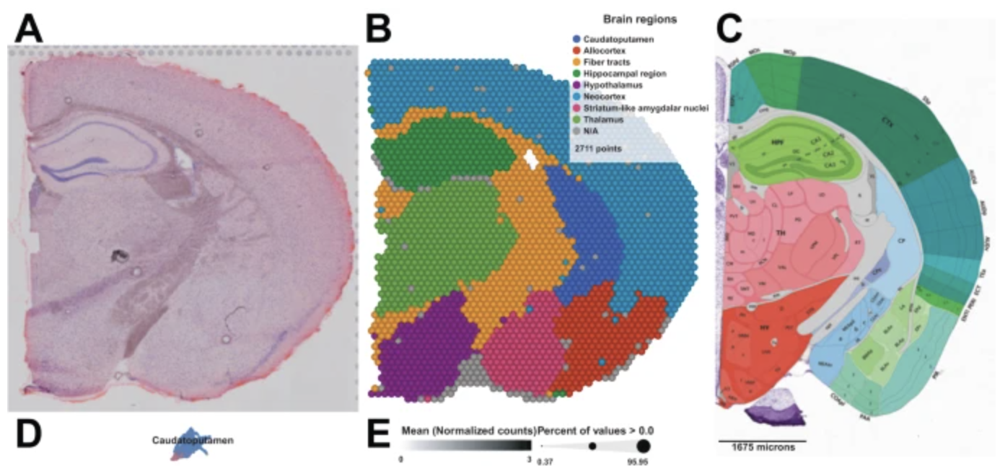
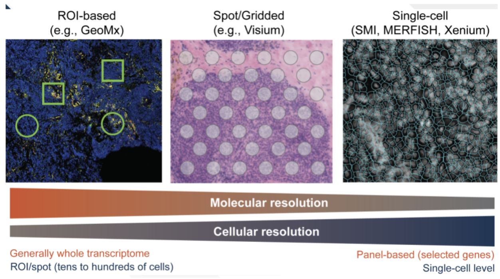
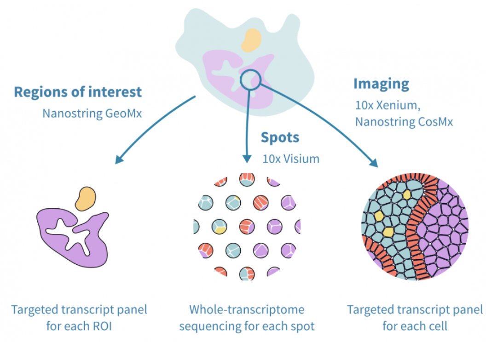
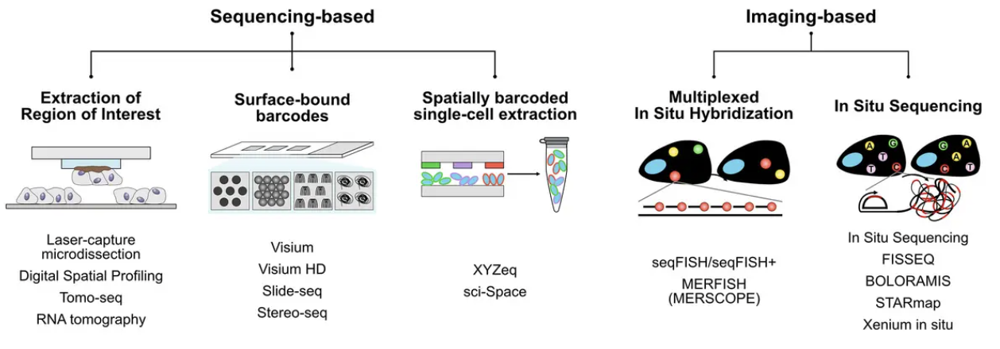
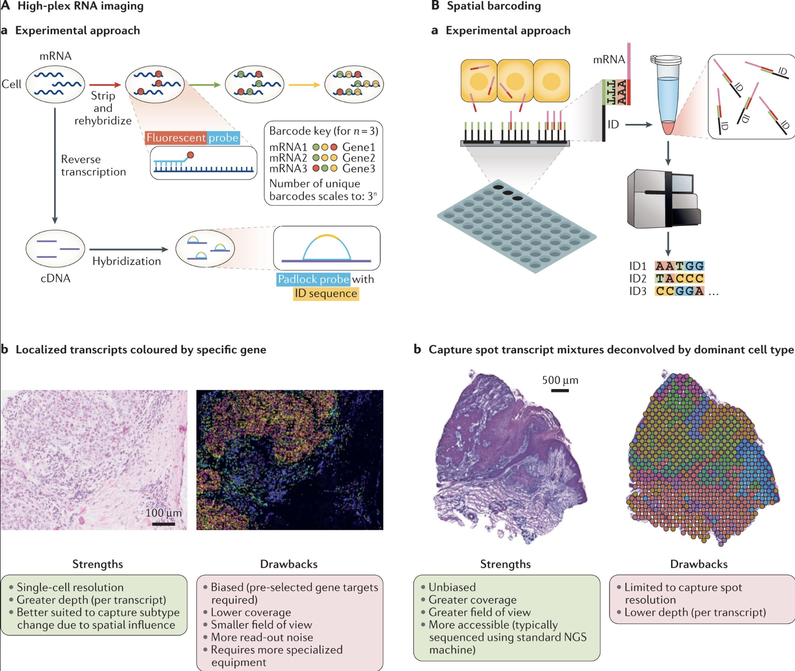
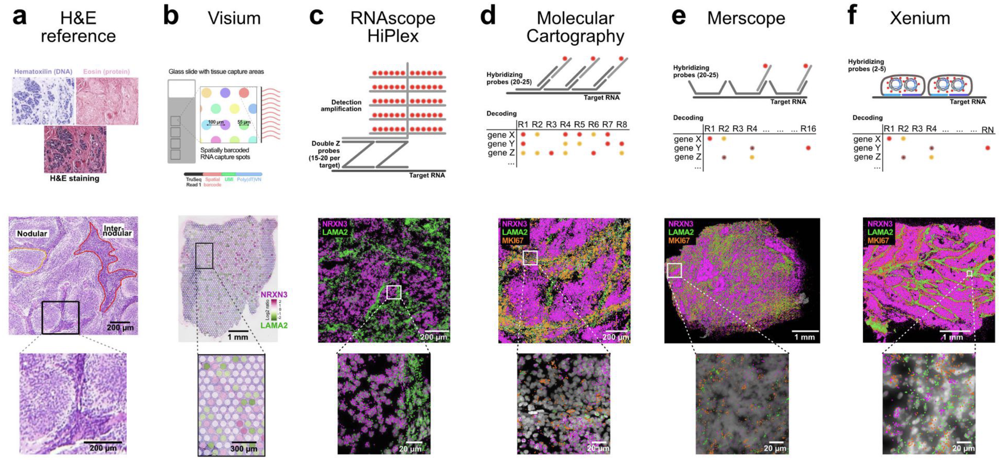
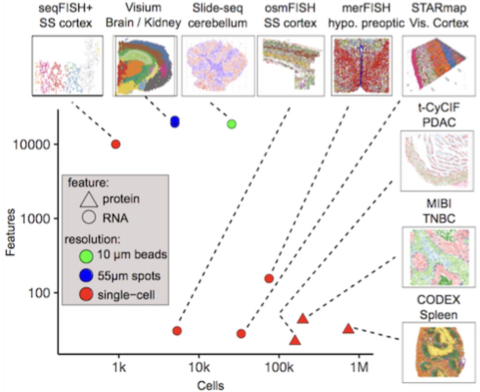

“Single-cell” spatial transcriptomics
????
Single-cell spatial transcriptomics is an emerging technology that enables the measurement of gene expression while preserving the spatial organization of cells within a tissue. See Figure 1 for a useful schematic I like. Unlike traditional single-cell RNA sequencing, which dissociates cells and loses spatial context, spatial transcriptomics allows researchers to analyze gene expression in relation to cellular neighborhoods, tissue architecture, and microenvironments, see Figure 2.


The spatial arrangement of cells is fundamental to understanding cell biology, as cellular functions are often influenced by their local microenvironment:
- Cancer: The tumor microenvironment plays a crucial role in disease progression, immune evasion, and therapeutic response. Understanding where specific cell populations reside within a tumor and how they interact with stromal and immune cells can reveal mechanisms of resistance and potential therapeutic targets.
- Developmental biology: Spatial positioning dictates lineage specification and organ formation, where disruptions in cell placement can lead to congenital defects. We can also overlay the gene expression at each spatial location with other imaging technologies or our current understanding of the structure of an organ, see Figure 3. This can help us learn how the cells in different regions of an organ have different functions, even if they are all the “same cell type.”

- Disease: In neurodegenerative diseases such as Alzheimer’s, the spatial distribution of microglia and astrocytes based on their (spatial) proximity to pathological hallmarks like amyloid plaques and tau tangles provides critical insights into disease mechanisms.
As one concrete example of how spatial transcriptomics advances cell biology beyond what other sequencing technologies offers: spatial transcriptomics is particularly valuable for studying cell-cell communication, as it enables the identification of ligand-receptor interactions that mediate signaling between neighboring cells. By integrating spatial data with single-cell transcriptomics, researchers can infer functional relationships between different cell types, uncovering regulatory networks that drive biological processes.
Note: Spatial information in cell biology has been studied for decades, long before single-cell sequencing became commercially feasible. Techniques like fluorescence in situ hybridization (FISH) have been used to visualize the spatial localization of specific RNA molecules within cells, providing crucial insights into gene expression patterns. Microscopy-based methods, including confocal and super-resolution imaging, have also been instrumental in understanding cellular structures and interactions. The key novelty of modern spatial transcriptomics is its ability to scale these analyses – rather than measuring just a few genes at a time, we can now capture the spatial expression patterns of hundreds to thousands of genes simultaneously, enabling a much more comprehensive view of cellular organization and function.
1 The broad categorization of spatial transcriptomic technologies
Spatial transcriptomic technologies can be broadly categorized into two main approaches: spot-based methods and imaging-based methods, see Figure 4 and Figure 5.


Spot-based technologies utilize sequencing-based approaches to capture gene expression across a tissue section. These methods typically involve placing spatially barcoded capture spots on a slide, allowing RNA molecules from the tissue to be sequenced while retaining their spatial information. Spot-based techniques offer broad coverage across the entire transcriptome, making them well-suited for large tissue sections and unbiased gene discovery. However, they have relatively low spatial resolution due to the size of the capture spots and may lack sufficient depth for detecting lowly expressed but biologically significant genes.
Imaging-based technologies rely on multiplexed imaging methods to visualize gene expression directly within tissues. These approaches build upon fluorescence in situ hybridization (FISH) and other imaging techniques, enabling subcellular resolution of RNA molecules. By using sequential hybridization cycles with fluorescent probes, imaging-based methods can measure the expression of dozens to hundreds of preselected genes. While this high-resolution approach provides detailed spatial maps at the single-molecule level, it requires prior selection of target genes and computationally intensive methods to delineate cell boundaries from dense tissue images.
See Figure 6, Figure 7, and Figure 8 for examples of what these datasets look like, and how spot- and imaging-based spatial transcriptomics could yield quite dramatically different datasets.



See Figure 9 for a table of many possible technologies to perform spatial transcriptomics.

test